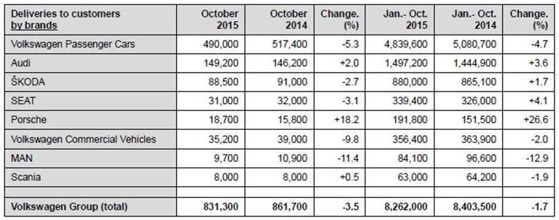
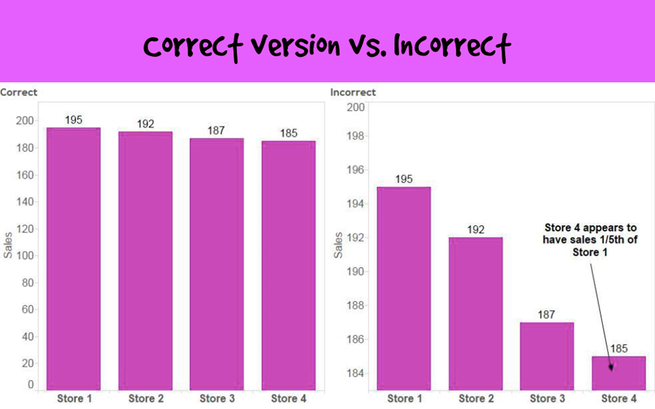
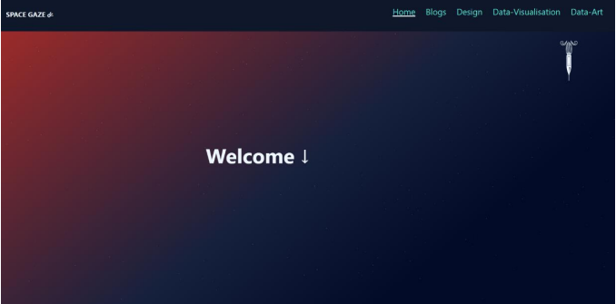
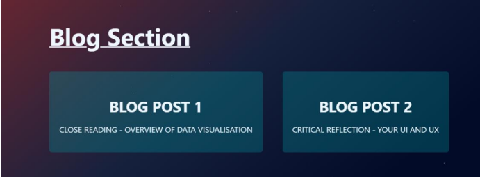
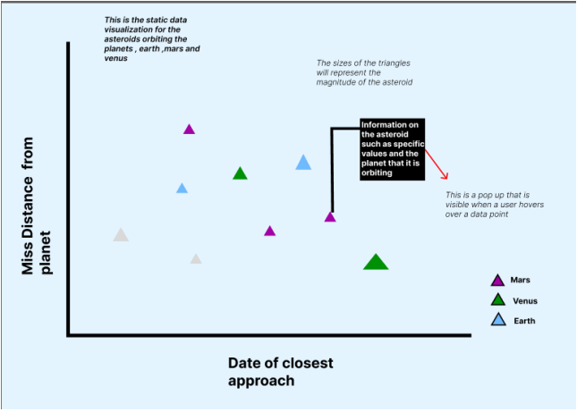
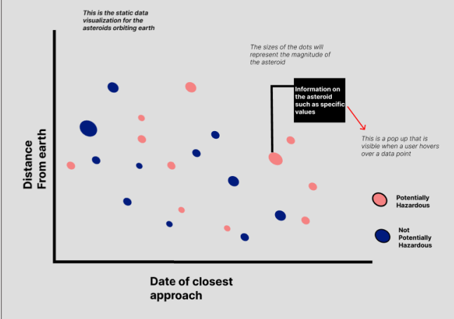
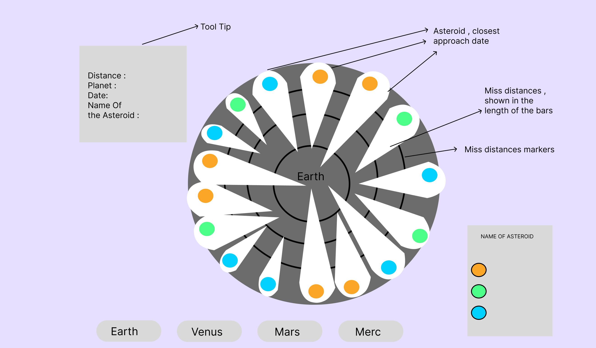
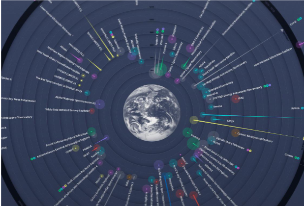

This page discusses the critical thinking behind web design and
data visualisations. There are two blogs on this site, the first
one looks at data visualisations and the second blog shows a
critical analysis of the previous UX and UI design of this
website.
Blog Post 1 - Close Reading - Overview of Data Visualisation
Data visualisation is used to depict data in a manner that makes
it understandable and readable (Li, 2020, p. 17). There is an
immeasurable quantity of both large and small-scale data (Li,
2020, p. 17) (Sadiku et al., 2016). Data is described as
unprocessed information. There is a need for this “raw unprocessed
information” to be translated into a visualised form (Li, 2020, p.
18). This is because data is often consulted in decision-making to
provide insight into certain subject matter. This in turn
expresses concern for the narrative conveyed by the visualisation.
Which calls for careful consideration from the designer and the
choices made when choosing forms of data visualisation.
The concept of Semiology suggests that visual depictions are signs
that construct meaning (Kidd, 2015, p.22). Data that is
unprocessed and not represented lacks meaning and fails to convey
information (Li, 2020, p. 17). Thus, data is only given meaning
and a purpose when it is represented through data visualisation.
This takes the raw unprocessed data and communicates it,
recognisably and understandably (Li, 2020, p. 21). This meaningful
information can then be utilised for various purposes across
different fields (Li, 2020, p. 17). However, the designer is
required to compare the advantages offered by each of the forms of
data visualisation.
Different datasets require different data visualisation forms
since each has its connotations (Kidd, 2015, p.23). Which impacts
what is signified for the receiver (Kidd, 2015, p.24). The visual
displays of data make use of signs that at first glance gives the
viewer some insight as to the meaning of the information
displayed. An example of this is the “Trees” form of data
visualisation which consists of root nodes (Li, 2020, p. 24). This
form arranges data by exhibiting it as a “network of nodes” (Li,
2020, p. 24). The advantage of this is that the Tree form can
display a larger datset. The connotation of using this data set is
that all the nodes are connected which relay the relationships
between them. Another connotation is that all nodes can be traced
back to a single node thus this data set contains information that
cannot standalone and each nodes feed into the next. There is also
a hierarchical structure. This presence of a hierarchy implies
that there is no equal level of importance between the individual
nodes. Thus, some parts may be glanced over while others require a
closer look and more attention from the viewer (Li, 2020, p. 24).
Li, 2020 discusses the uses and some advantages of the forms of
data visualization. Despite the many advantages of a form, it may
not be considered a method of displaying some datasets based on
the intended meaning of that set. This can be seen by the
comparison of the “Table” and “Graphs” forms (Figures 1 and 2).
Tables offer the affordance of accuracy depiction since it shows
the precise value without an illustration (Li, 2020, p. 30).
Graphs however offer an illustration without exact values (Li,
2020, p. 37). The advantage of using a graph is the insight that
it offers the reader, they can see an overall trend but cannot
directly identify the exact differences between the data. Tables
offer further insight since actual values are on display (Li,
2020, p. 30). Both forms show data and relay information to the
reader. The defining factor when choosing these two forms is what
data is being represented and what fits the needs of the ideal
reader.
“The presentation of information in data form can have its own
weight” and this statement stresses the impact that visualisation
has on the viewer (Kidd, 2015, p.32). If there is a disconnect
between the observed and the understood, then the visualisation
becomes an example of misinformation (Kidd, 2015, p.23). This is
an issue since the visualisation is intended to translate the data
into something meaningful. There are a multitude of meanings that
can be constructed by a visualisation (Kidd, 2015, p.26). This
depends on the intention of the designer which for example could
be to inform or to mislead (Li, 2020). However, a designer may
have one intention, but the resulting visualisation is not in line
with this. Which displays the value of being educated on data
visualisations and representation.
According to Representation and Myth, the signifier is layered and
takes place at both a connotative and denotative level (Kidd,
2015, p.23). Thus, is essential to consider the context
surrounding the representation and its presentation. let us take a
closer look at an example from earlier with “Graphs” and “Tables.”
Since a table requires reading and graphs are interacted with
visually, one needs to consider the context before deciding on the
data visualisation form (Knaflic, 2015, p.43). If the form is used
in a live presentation, then a Graph is favoured since the
audience can get a quick insight into the matter discussed
(Knaflic, 2015, p.43). However, if the Form is used in scientific
research, then specific values are needed, and a Table shows this.
The connotational impact is seen by the way a representation
“frames and feeds” the understanding of a form. An example is a
bar graph that does not start at zero on an axis which is more
than likely to frame a situation differently by skewing one's
perspective (Figure 3). It may zoom into slight differences making
it seem greater than it is (Knaflic, 2015, p.43)
The digital era has increased the rate of data collection and
distribution. This increases the demand for Data visualisation
(Sadiku et al., 2016). This is where we need to look at what and
how information is being represented, as well as whose values are
being shared through the representation. Designer is encouraged to
educate themselves on the impact of their work and how to
effectively communicate it to an audience. This is done by
utilising the various advantages of the different data
visualization forms.

Figure 1: Table showing exact data values
Figure 2: Graph showing data without specific values

Figure 3: Bar graph comparison
References:
Kidd, J., 2015. Representation. Routledge.
Knaflic, C.N., 2015. Storytelling with data: A data visualization
guide for business professionals. John Wiley & Sons.
Li, Q. and Li, Q., 2020. Overview of data visualization. Embodying
Data: Chinese Aesthetics, Interactive Visualization and Gaming
Technologies, pp.17-47.
Sadiku, M., Shadare, A.E., Musa, S.M., Akujuobi, C.M. and Perry,
R., 2016. Data visualization. International Journal of Engineering
Research And Advanced Technology (IJERAT), 2(12), pp.11-16.
Makeover Monday: What it feels like when a bar chart doesn't
start at Zero (no date) VizWiz. Available at:
https://www.vizwiz.com/2014/12/non-zero-baseline.html (Accessed:
31 July 2023).
Survey data analysis in NCSS (no date) NCSS. Available at:
https://www.ncss.com/software/ncss/survey-data-analysis-in-ncss/
(Accessed: 31 July 2023).
Webmaster (2015) Volkswagen Group delivers 8.26 million vehicles
to customers worldwide in first 10 months, Automotive World.
Available at:
https://www.automotiveworld.com/news-releases/volkswagen-group-delivers-8-26-
million-vehicles-customers-worldwide-first-10-months/ (Accessed:
31 July 2023).
Blog Post 2 - Critical Reflection - Your UI and UX
User Experience (UX) is characterised by the interfaces that
create useful interactions that serve to aid the user in
accomplishing their goals. User Interface (UI) considers the
visual design elements of the interfaces, and this evolves the
usable interfaces, that are involved in UX, by making them
readable and appealing which then leads to emotional connections.
User interface and User Experience fundamentally focus on
“functionality and efficiency”, however in recent times, designers
have placed importance on the “engaging” aspect of UI and UI to
create memorable and affective experiences (Aziz, 2023). I intend
to analyse the UI and UX of my website “Space Gaze” while
critically reflecting on the design elements, in an attempt to
evaluate the efficacy of incorporating design principles.
The purpose of this website is to depict data in a meaningful
manner while providing information about the design decisions
made. The data that is displayed on this website comes from the
NASA API on Asteroids, thus there is an overarching space theme
followed throughout this website. This theme is reinforced through
components such as the colour palette, typography as well as the
navigational aspects; which creates “consistency” (Aziz, 2023)
allowing for an immersive experience for the user.
The colour palette observed in Figure 1 shows a gradient between
two colours, orange and dark blue which serve as the sun and deep
space respectively. This gradient is placed at an angle to emulate
the sun shining in on the website, acting as a light source for
the content on the screen. The colour of the webpage titles in the
nav bar is teal, which coincides with the blue themes of the
background, this colour is also used in the background of the
textboxes, shown in Figure 2. The repetition of the blue hues
creates visual and emotive consistency for the user, which “weave
emotions into design” (Aziz, 2023) this engages the user creating
a meaningful experience. The use of these colours can also be seen
as a Traditional Convention which helps associate this website
with a space genre (Mailloux, 1983, p. 399).


Figure 1: Table showing exact data values
The typography of the website follows the Constitutive Convention
which helps “make sense of the text” (Mailloux, 1983, p. 404),
this is done by creating a hierarchy of information through the
size and density of the textual elements. This can be seen in
Figure 2 above, where the headings of sections and the headings of
textboxes are bold however they vary in size with the section
headings in a larger font, while both headings are distinguishable
from the content in the textbox (Soegaard, 2020). The Whitespace
between the headings and textboxes also controls the visual
hierarchy by Figure 1 Home Page of website "Space Gaze" separating
content from each other even in the case of a single textbox where
there is space between the heading and the rest of the text.
The Whitespace around the “rocket” button (refer to Figure 1)
which takes the user to the bottom of the page helps the user
differentiate it from the non-interactable object on the webpage
such as the icon next to the “Welcome” text. The iconography used
in this website enhances and reinforces the space theme of the
website, which is seen by the “to the top” and “to the bottom”
icons which are “rockets” as well as the asteroid icon in the nav
bar.
The starry background of the website is interactive since it
responds to the movement of the mouse, the stars also immerse the
viewer by the fading in and out creating an interesting to look at
display. The movement of the stars as well as the fading aspect
occur subtly, this was done to not distract or to not cause any
irritation for the user (Sharma and Tiwari, 2021).
The starry background serves to introduce the user to the data
visualisations that they will encounter on the website, since the
visualisation, as depicted by Figures 3 and 4, will feature data
on asteroids. This data is represented in scatter plots to encode
the “relationship”(Knaflic, 2015) between the distance of the
asteroid (y-axis) from a planet during a specific period of time
(x-axis). For both data visualisations the points themselves will
vary in size depending on the diameter of the asteroid that is
depicted in the dataset, this visually conveys information quickly
to a user. Another way that this is done is seen in Figure 3 where
the scatter plot shows information about three planets and the
corresponding points differ in colours “relating it to a group”
through the observation of similarity (Knaflic, 2015).
The plot in Figure 4 acts as an “Enclosure” (Knaflic, 2015) of the
data pertaining to Earth from the scatter plot in Figure 3 , in
addition to this closer view of specific values ,the user is also
shown which asteroids are potentially hazardous. This data
visualisation uses the “Preattentive attribute” of colour to
“highlight” and differentiate the hazardous asteroids from the
non-hazardous asteroids – this visually communicates information
to the user (Knaflic, 2015). Another form of visual communication
is the feedback given to a user when they hover their mouse over a
data point and a textbox with information about that specific
asteroid appears such as its magnitude and distance from the
planet that it orbits.

The successes of this website are identified through its coherent
theme seen by the colour palate and the interactive elements such
as the starry background as well as the iconography depicting
asteroids and rockets. A failure of this website is the strict
adherence to the textboxes shown in Figure 2, this is because all
content on this site are indicated with the same styling which
confines and restricts creativity by not displaying data in
various styles.
The website utilises elements of design such as Whitespace to
communicate information to the user in a manner that is neatly
laid out making it clear to read. This website follows and creates
conventions such as the colours and iconography which construct an
immersive experience for the user helping them navigate and
orientate themselves throughout the site. It was also identified
that while having consistence designs is useful it is important to
incorporate multiple styles of design to avoid uniformity that
could lose the attention of the user.
References:
Aziz, K.A., 2023. Building Emotions and Memories: The Critical
Role of Stories in Improving UI/UX Design [WWW Document]. Medium.
URL
https://bootcamp.uxdesign.cc/building-emotions-and-memories-the-critical-
role-of-stories-in-improving-ui-ux-design-d66e6acdf711 (accessed
8.27.23).
Data Visualisation [WWW Document], n.d. URL
https://mishaliapillay.github.io/Semester2Website/ (accessed
8.28.23).
Knaflic, C.N., 2015. Storytelling with Data: A Data Visualization
Guide for Business Professionals. John Wiley & Sons
Data Visualisation [WWW Document], n.d. URL
https://mishaliapillay.github.io/Semester2Website/ (accessed
8.28.23).
Mailloux, S., 1983. Convention and Context. New Literary History
14, 399. https://doi.org/10.2307/468693
Sharma, V., Tiwari, A.K., 2021. A Study on User Interface and User
Experience Designs and its Tools 12
Soegaard, M., 2020. The Power of White Space in Design [WWW
Document]. The Interaction Design Foundation. URL
https://www.interaction-
design.org/literature/article/the-power-of-white-space (accessed
8.27.23).
Blog Post 3 - Close Reading - Interaction for Data Visualisation
A rudimentary explanation for Interaction states that it is the action taken that influences a system, however, the term “Interaction” is used in different fields and is described as being “elusive and overloaded ” (Dimara and Perin, 2020a, p. 2).Interaction is an essential aspect of Data Visualisation, Dimara and Perin organised an extensive research project which considered many explanations and mentions of Interaction used in the Visualisation community to construct a definition, the process of their research is depicted in Figure 1. I intend to discuss Interaction for Data Visualisation by examining its key features as outlined in the article What is Interaction for Data Visualisation? by Evanthia Dimara and Charles Perin (2020). I will then discuss the benefits of Interaction as well as the affordances of expanding the “scope of user intent” (Dimara and Perin, 2020a, p. 6) by unpacking its usage in Human-computer Interaction (HCI) while also focusing on good Interaction.
Figure 1 showing the research process of Dimara and Perin
There are external and internal entities that are requisites for Interaction for Data
Visualisations, these help to outline and explain the inherent features of Interaction in
comparison to HCI (Dimara and Perin, 2020a, p. 3). The External entities are the user
and the data with a computer acting as the mediator between the two, however, HCI
differs in that only a user and a computer act as the entities. External entities can go
beyond this by expanding the scope of the modalities used such as the inclusion of
different objects namely a mouse or the physical confinements of users (Dimara and
Perin, 2020b, p. 4). When designers expand the net of modalities, they can unlock
new ways of engaging a user which helps deepen the meaning of an Interaction while
increasing accessibility, since users are given a variety of Interaction options. The
Internal entity is the driving force of the Interaction, which is the intent of the user, this
can occur at multiple levels which range from the need to filter information to creating
knowledge through the exploration of the information in the data.
Interaction in Data Visualisation and HCI differ in the scope of user intent, this is seen
by HCI humanising user intent which seeks to evoke emotive reactions which is a shift
from the “data-driven intent” of Visualisation. Dimara and Perin suggest that by
adopting the humanized intent of HCI designers can create a space that enables
creativity which compensates for the “unanticipated goals” of a user. This encourages
designers to create frameworks that are flexible and fit the ever-changing needs of
users which makes the different actions of users “allowable”(Dimara and Perin, 2020b,
p. 4).
Interaction for Data Visualisations also includes External and Internal actions that are
necessary features for Interaction and have varying degrees of granularity that exist
at micro and macro levels (Dimara and Perin, 2020b, p. 4). External actions are
described in terms of “action-reaction pairs” (Seidelova, 2022) which define the
communication acts between the user and the Visualisation as a “dialogue” (Dimara
and Perin, 2020b, p. 6). The actions of the users evoke a response from the
Visualisation, these actions and responses occur through different modalities, it is
important to note that the responses are perceived. When one looks at the dialogue
of Interaction in conjunction with the perceived response, it should be noted that there
needs to be clarity in the response in terms of it being a reaction to the action of the
user, without this the response is not perceived. Dimara and Perin explain that Internal
actions are the cognitive process of the user which unpacks the Visualisation through
deductive reasoning by encoding the information, this gives meaning to Data
Visualisations, and this aligns with the user's intent.
Figure 2 Definition of Interaction for data Visualisation by Dimara and Perin
Figure 2 is the captured definition of Interaction for Data Visualisation that is defined
by Dimara and Perin which aids in the informing of design practices through the
understanding of Interaction (Dimara and Perin, 2020b, p. 2). This definition allows for
the discernment of the beneficial aspects of Interaction for Data Visualisation which
offers further insight than static Visualisation by helping the user enter different modes
of engagement (Heavy.AI, 2022). Interaction is also seen as a solution to large data
representations, this is because users can filter and sort through information at their
discretion - fulfilling their goals, as shown in Figures 3 and 4 (Seidelova, 2022).
Another benefit of Interaction is data storytelling as users can construct knowledge
through the manipulation of the data allowing the user to take a closer look which
forms new meaning from the Visualisation. The Interaction aspect of Visualisation also
helps draw the user's attention to specific areas in the data that allow for exploration
(Heavy.AI, 2022) and the identification of valuable information. Despite the many
benefits of Interaction for Data Visualisation, there is a very evident critique, this is that
designers focus on the mechanics of the Interaction and places less importance on
the depiction of the Visualisation.
Figure 3 Data Visualisation of large data set/Figure 4 Zoomed in view of Data Visualisation of large data set.
Understanding Interaction is mandatory for designers so that they can create good
Interactions, as a good Interaction can amplify the benefits stated above. According to
Dimara and Perin, good Interaction allows the user to know how to use the tool and
this does not “impose what to do with it ”(Dimara and Perin, 2020b, p. 7), this was
seen above in designing for creativity. An example of good Interaction is when the
dialogue occurs in a smooth manner, which means that the reaction of the Data
Visualisation has the least amount of complexity. Another way good Interaction is
implemented is seen by the Transmission concept which is the amount of “error-free
information per time unit” (Dimara and Perin, 2020b, p. 7), this can be accomplished
by decreasing the number of actions needed by the user to interact with the
Visualisation.
Overall, Interaction is a useful feature of Data Visualisation, and it helps create
knowledge in new ways through engagement. The key features which included the
Internal and External entities as well as actions explained the components of
Interaction and provided a framework that the definition was constructed upon. Based
on the benefits of Interaction a need for designers to carefully consider and reflect
upon their designs is stated and a need for the incorporation of Interaction is
expressed.
References:
Dimara, E., Perin, C., 2020a. What is Interaction for Data Visualization? IEEE
Transactions on Visualization and Computer Graphics 26, 119-129.
https://doi.org/10.1109/TVCG.2019.2934283
Heavy.AI, Heavy.A., 2022. What is Interactive Data Visualization? | HEAVY.AI
[WWW Document]. URL https://www.heavy.ai/technical-glossary/interactive-data-visualization (accessed 9.25.23).
3
Thudt, A., Walny, J., Gschwandtner, T., Dykes, J., Stasko, J., 2018. Exploration and
Explanation in Data-Driven Storytelling. pp. 59-83.
https://doi.org/10.1201/9781315281575-
Blog Post 4 - Critical Reflection - Data Driven Artwork
What is Data-Driven Art?
Traditional data visualization involves the meaning-making of a data set and translating it
into a readable form that effectively conveys information to the viewer. Artistic
Visualizations follow suit; however it is created with the “intent” of creating art (Viégas and
Wattenberg, 2007, p. 2), thus there is an emphasis on applying aesthetics to the data. It
is necessary to make the distinction that Artistic Visualizations contain data and that the
“aesthetics” that are applied are not that of beauty but rather the idea that the artwork will
evoke the “concept of emotion” (Li, McMahon and Haddad, 2013, p. 4) (MiMi, 2023).
I intend to analyze the Data-Driven artwork on the website Space Gaze using the
theoretical framework of Artistic Visualizations. I will also evaluate the planning and the
steps taken to create this artwork, as well as discuss the impact that my research has
had in designing the data-driven artwork through the exploration of example artworks.
What Did I hope to achieve?
The Data-Driven Artwork on the website Space Gaze displays data on asteroids from the
NASA API. The data set chosen looks at the various paths taken by each asteroid for the
duration of its life span. Only 20 asteroids are displayed as it yields over 1000 data points,
this has enough data to display overarching trends, while still being readable so that a
user is still able to see specific asteroids that are displayed in the legend.
I wanted to create a Circular Bar plot using D3, as seen in Figure 1, I chose this because
it is seen as one of the “best ways” (Think, 2020) to display mass amounts of data due
to its aesthetic nature, by making better use of the space while allowing it to depict
“obvious patterns” in the data. Another reason that I chose a Circular Bar plot is that it is
not necessary to see the exact value of the bars since it displays the overall trends of the
asteroid, however, if a user does want to know the exact miss distance, there is a tooltip
that displays this information when a user hovers over the bars.

Figure 1 shows the wireframe of the data art.
What are examples that inspired my Data-Driven Artwork?
Two examples of Data-Driven Artworks have inspired the design of the wireframe above,
both these artworks creatively convey information to the viewer, and they offer a deeper
insight into the data that is displayed. The first example directly correlates with my choice
of which bits of data to display, this example is an Orbit map of the solar system with over
1,800 data points, shown in Figure 2 (Lutz, 2019). By displaying a large amount of data,
it gives an idea of the vastness of space as well as the multitude of asteroids and comets
that are in our solar system.
he Orbit map influenced my decision to widen the scope of data by showing the closest
approaches of all planets that an asteroid encounters. By placing all planets at the (0;0)
coordinate we can identify that an asteroid might have a smaller distance between one
planet and a larger distance between another.
The shape of this design also fits the conventions that a user may be accustomed to
when looking at space data due to its circular nature, this has also influenced my decision
to make a Circular Bar plot. This example helped me consider what emotions and the
message I want to give the user through my data art, and it was to share this
overwhelming amount of asteroid data in a more digestible way so that the user can fully
take in the dataset. A Circular Bar plot also affects the emotions of a user as they will feel
more comfortable with the data set since it is in a familiar form. I wanted to make this
information more accessible so that people who see this design gain insight without
needing to have a scientific background, and this method of display helps accomplish
this.
Figure 2 Example 1, An Orbit Map of the Solar System
The second example inspired me to add the miss distance markers around the interior of
the Circular Bar plot, as this would give a sense of the distances of each planet at first
glance. It was important for me to make this data art reveal a lot of information from the
first encounter, as it deepens the understanding of the data and entices the viewer to take
a closer look and interact with the data. While the interest of the viewer is peaked by a
colourful and plentiful map, it is valuable to add interactive elements such as buttons that
filter the diagram, to give the user clearer views of the asteroid information.

Figure 3 Example 2, starring into Space
How did I go about designing it?
After designing a Circular Bar plot in d3 using the wireframe inspired by the two examples
above, I then decided to implement interactive elements, such as buttons to filter the
asteroid data for each planet. This is seen in Figure 4 where a button is generated for
every planet that the asteroids approach, when this button is clicked the other asteroids
fade and only the ones selected are visible. I decided to add this element in because I
feel easily overstimulated with large amounts of information, this filtering option clarifies
information for me. I felt that this was in line with the emotions that I wanted to create with
this data Artwork.
What are the strengths and weaknesses?
A strength of this design is the distilling of information with the use of the buttons, this is
useful since it helps the user filter out which information they wish to focus on. Another
strength is the miss distance markers are aided by the tooltip, since the user can hover
over a bar and get specific values, and the user already has a sense of the value from
the markers.
A weakness of this design is that it only shows the data of 20 asteroids, thus future
iterations should include a slider that helps the change the set of the 20 asteroids as it is
moved. Since this data-driven artwork intends to inform the user of the trends of asteroids
the inclusion of the slider could enhance the level of understanding by comparing different
data sets.
This data-driven artwork is effective in its overall design, by focusing on the emotions that
it seeks to coax from a user. This design conveys a large amount of information to the
user, but it also does a good job of helping the user discover insight on their own through
the interactive elements. This design also relays the narrative that asteroids travel long
paths encountering many planets, while also displaying the shocking number of close
approaches that these asteroids have with Earth. This data-driven artwork is informative
and effective through its choice of engagement with the data set.
References:
Benzi, K. (2020) Kirell Benzi - What is Data Art? A definition. Available at:
https://www.kirellbenzi.com/blog/data-art-definition (Accessed: 25 October 2023).
Li, R.Q., McMahon, M. and Haddad, H. (2013) ‘An investigation into a new aesthetics of
scientific data visualisation – The Australian Council of University Art and Design
Schools’. Available at: https://acuads.com.au/conference/article/an-investigation-into-a-
new-aesthetics-of-scientific-data-visualisation/ (Accessed: 25 October 2023).
Lutz, E. (2019) An Orbit Map of the Solar System, Tabletop Whale. Available at:
http://tabletopwhale.com/2019/06/10/the-solar-system.html (Accessed: 26 October
2023).
MiMi (2023) ‘What is Data Art?’, agoradigital.art, 5 February. Available at:
https://agoradigital.art/what-is-data-art/ (Accessed: 25 October 2023).
Think (2020) Circular Barplot in Data Visualization, Think Design. Available at:
https://think.design/services/data-visualization-data-design/circular-barplot/ (Accessed:
25 October 2023).
Viégas, F.B. and Wattenberg, M. (2007) ‘Artistic Data Visualization: Beyond Visual
Analytics’, in D. Schuler (ed.) Online Communities and Social Computing. Berlin,
Heidelberg: Springer Berlin Heidelberg (Lecture Notes in Computer Science), pp. 182–
191. Available at: https://doi.org/10.1007/978-3-540-73257-0_21.